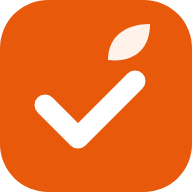

CheckMyVisa est un service indépendant qui aide les voyageurs à préparer leur dossier de visa avant le dépôt. Nous ne déposons pas la demande et nous ne sommes ni un consulat ni un centre de visa : nous vous aidons à comprendre ce qui sera demandé, à vérifier vos pièces et à éviter les erreurs courantes qui retardent ou font refuser un dossier. Aucun service ne peut garantir l'obtention d'un visa : la décision revient toujours au consulat.
Ces informations sont indicatives. Vérifiez toujours les règles sur les sites officiels avant de déposer votre demande.
CheckMyVisa is an independent service that helps travellers prepare their visa file before submitting it. We do not file the application, and we are not a consulate or a visa centre. We help you understand what will be asked, check your documents, and avoid the common mistakes that delay or sink a file. No service can guarantee a visa: the decision always belongs to the consulate.
This information is indicative. Always check the rules on the official websites before you apply.
CheckMyVisa خدمة مستقلة تساعد المسافرين على تحضير ملف التأشيرة قبل إيداعه. نحن لا نودع الطلب، ولسنا قنصلية ولا مركزاً لطلبات التأشيرة. نساعدك على فهم ما سيُطلب منك، ومراجعة وثائقك، وتفادي الأخطاء الشائعة التي تؤخر الملف أو تؤدي إلى رفضه. لا يمكن لأي خدمة ضمان الحصول على التأشيرة، فالقرار يعود دائماً إلى القنصلية.
هذه المعلومات إرشادية. تحقق دائماً من القواعد على المواقع الرسمية قبل تقديم طلبك.
